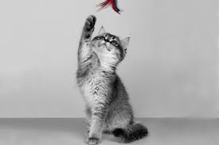

Коти люблять тепло і затишок

Кожен кіт — особистість

Вони роблять дім живим
Невеликий сайт про котів, факти та милі відео
Коти люблять тепло і затишок
Кожен кіт — особистість
Вони роблять дім живим
Коти живуть поруч з людиною вже тисячі років. Раніше їх цінували за вміння ловити мишей, а сьогодні — за затишок і спокій, які вони приносять у дім.
У кожного кота свій характер: одні люблять гратися і бігати, інші віддають перевагу спати цілий день. Але всі вони по-своєму прив’язуються до свого господаря.
Багато людей вважають котів справжніми антистресами, бо навіть просте спостереження за ними допомагає розслабитися.